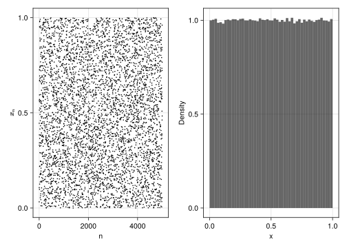

For pseudorandom number generation, there is some deterministic (non-random and well defined) sequence \(\{x_n\}\), specified by
\[
x_{n+1} = f(x_n, x_{n-1}, ...)
\]
originating from some specified seed\(x_0\). The mathematical function \(f(\cdot)\) is designed to yield desirable properties for the sequence \(\{x_n\}\) that make it appear random.
Those properties include:
Elements \(x_i\) and \(x_j\) for \(i \neq j\) should appear statistically independent. That is, knowing the value of \(x_i\) should not yield any information about the value \(x_j\).
The distribution of \(\{x_n\}\) should appear uniform. That is, there shouldn’t be values (or ranges of values) where elements of \(\{x_n\}\) occur more frequently than others.
The range covered by \(\{x_n\}\) should be well defined.
The sequence should repeat itself as rarely as possible.
In Julia, the main player for pseudorandom number generation is the function rand(), which generates a random number in each call without giving any arguments once a seed is set (it is usually set to the current time by default). You can set the seed yourself by using the Random.seed!() function from the Random package.
As can be seen from the output, setting the same seed will generate the same sequence.
1.1 Creating a simple pseudorandom number generator
Here, we create a Linear Congruential Generator (LCG). The function \(f(\cdot)\) used here is just a linear transformation modulo \(m\): \(x_{n+1} = (ax_n + c) \mod m\).
Here, we pick \(m = 2^{32}\), \(a = 69069\), \(c = 1\), which yields sensible performance.
usingDataFrames, AlgebraOfGraphics, CairoMakiea, c, m =69069, 1, 2^32next(x) = (a*x + c) % mN =10^6vec =Array{Float64, 1}(undef, N)x =2024# Seedfor i in1:Nglobal x =next(x) vec[i] = x/m # Scale x to [0, 1]enddf =DataFrame(x =1:N, y = vec)fig =Figure()p1 =data(first(df, 5000)) *mapping(:x, :y) *visual(Scatter, markersize =3)p2 =data(df) *mapping(:y) *visual(Hist, bins =50, normalization =:pdf)draw!(fig[1, 1], p1, axis = (xlabel ="n", ylabel = L"\mathbf{x_n}"))draw!(fig[1, 2], p2, axis = (xlabel ="x", ylabel ="Density"))fig
┌ Warning: Found `resolution` in the theme when creating a `Scene`. The `resolution` keyword for `Scene`s and `Figure`s has been deprecated. Use `Figure(; size = ...` or `Scene(; size = ...)` instead, which better reflects that this is a unitless size and not a pixel resolution. The key could also come from `set_theme!` calls or related theming functions.
└ @ Makie C:\Users\brain\.julia\packages\Makie\Qvk4f\src\scenes.jl:220

1.2 More about Julia’s pseudorandom number generator
In addition to rand(), we can also use randn() to generate normally distributed random numbers.
After invoking using Random, the following functions are available:
Random.seed!()
randsubseq()
randstring()
randcycle()
bitrand()
randperm() and shuffle() for permutations
In addition, in Julia, we can create an object representing a pseudorandom number generator implemented via a specified algorithm, for example, the Mersenne Twister pseudorandom number generator, which is considerably more complicated than the LCG described above. In Julia, we can create such an object of the Mersenne Twister pseudorandom number generator by calling rng = MersenneTwister(seed), and then pass the rng to rand() to let it use the given pseudorandom number generator to generate pseudorandom numbers.
2 Monte Carlo simulation
The core idea of Monte Carlo simulation lies in building a mathematical relationship between an unknown quantity to be estimated and the probability of a certain event, which can be estimated by statistical sampling. Then, we can get an estimate of this unknown quantity.
We can use this idea to estimate the value of \(\pi\).
┌ Warning: Found `resolution` in the theme when creating a `Scene`. The `resolution` keyword for `Scene`s and `Figure`s has been deprecated. Use `Figure(; size = ...` or `Scene(; size = ...)` instead, which better reflects that this is a unitless size and not a pixel resolution. The key could also come from `set_theme!` calls or related theming functions.
└ @ Makie C:\Users\brain\.julia\packages\Makie\Qvk4f\src\scenes.jl:220
As can be seen from the above figure, we know:
The area of the unit square is 1;
The area of the first quadrant of the unit circle is \(\pi / 4\);
Then, if we randomly throw a ball within the unit square, the probability of the event that this ball falls into the area of the first quadrant of the unit circle is \(\pi / 4\). Further, we know that the probability of this event can be estimated by its frequency if we repeat this experiment infinitely many times; therefore, we can estimate the value of \(\pi\) by the following formula:
\[
\hat{\pi} = 4 \frac{\text{The number of times falling in }x^2 + y^2 \leq 1}{\text{Total number of times}}
\]
┌ Warning: Found `resolution` in the theme when creating a `Scene`. The `resolution` keyword for `Scene`s and `Figure`s has been deprecated. Use `Figure(; size = ...` or `Scene(; size = ...)` instead, which better reflects that this is a unitless size and not a pixel resolution. The key could also come from `set_theme!` calls or related theming functions.
└ @ Makie C:\Users\brain\.julia\packages\Makie\Qvk4f\src\scenes.jl:220